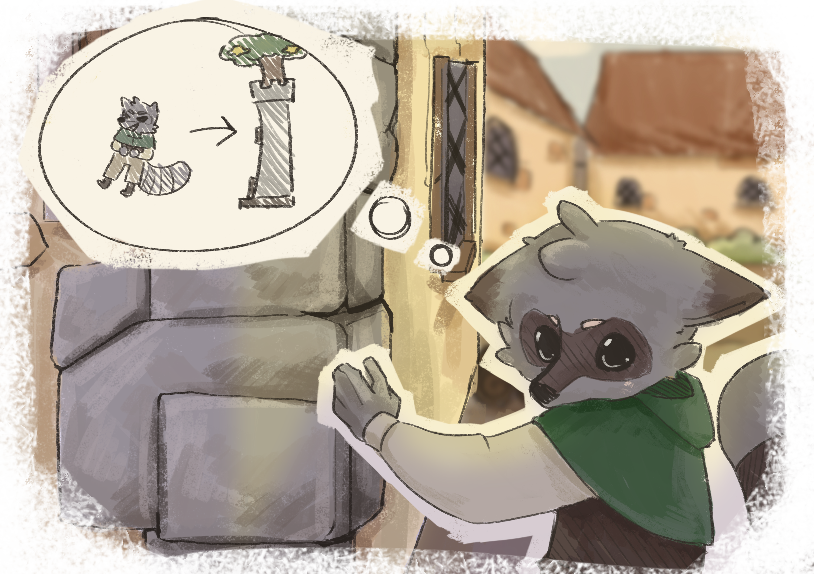
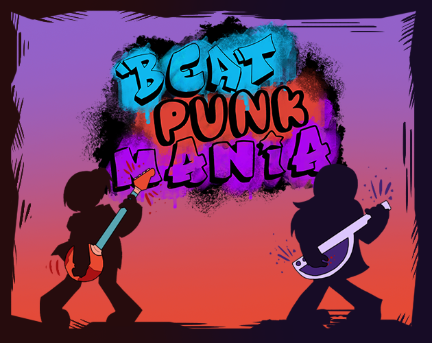
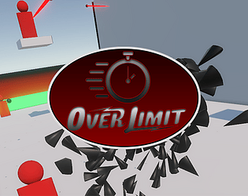
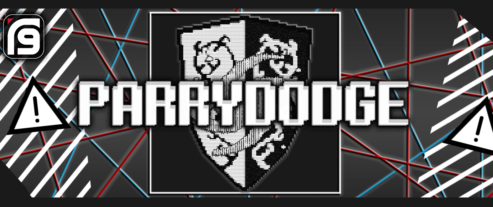
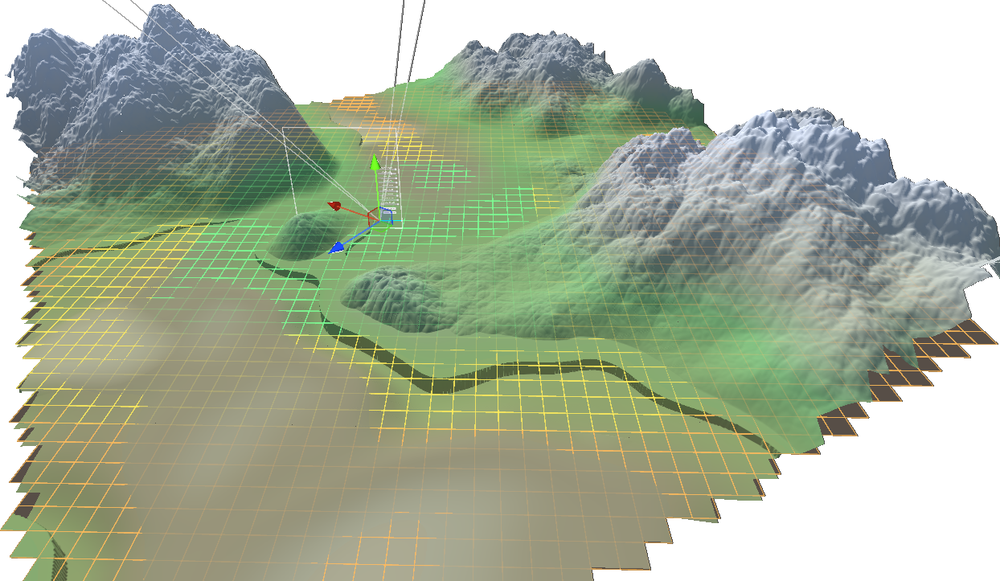
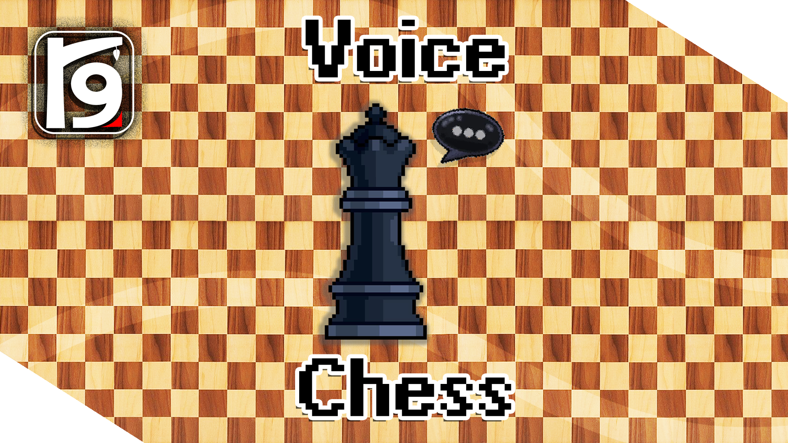

CitruSpire (2025)


Programmer · Game Designer · Composer

Born in Lithuania, based in the UK. Studying Game Design & Production at Abertay University.
I've been building things for 5+ years now, from systems / gameplay programming to UI/UX or composing original soundtracks.
I care a lot about how games feel, both mechanically and sonically.
Outside of projects I play chess, make music, and lose hours to random indie games.



Solo project that is for now abandoned due to development hell;
Focused on quick traversal, full slow-motion toggle, along with parkour wall-running movement.

Bullet-hell system sandbox, development on hiatus from burnout;
Features a wave system, parrying, dodging and a variety of attacks varying in difficulty.

Complete open-world terrain generation simulation;
Features LOD, infinite procedural chunk & biome generation with performance-oriented systems.

Singleplayer Chess prototype in the bug-fixing stage;
Features live speech recognition, engine play of varying levels, mobile-friendly UI, and blindfold simulation.